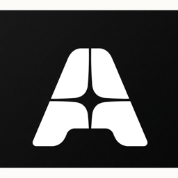

Automa
The macOS app that fills out job applications
Free and open source. Reads the public internship and new-grad job boards, then drives a real browser through the application form on your own machine while you watch. No account, no server, no telemetry.
The button downloads the Apple Silicon build. Use the arrow for Intel. Not sure which? Apple menu → About This Mac. If it says Apple M-anything, take Apple Silicon.
Features
- Local job feed: about 32,000 internship and new-grad listings, searchable instantly, online or off
- Fills in a real browser: the form runs inside the app window and you watch every field fill
- Verified adapters: Greenhouse, Lever, Ashby, and Work at a Startup fill end to end, resume included
- Partial and generic: Workday fills My Information; other career sites get what it recognises
- Honest results: confirmed only with real evidence, otherwise pending confirmation
- Protected questions: citizenship, sponsorship, disability, race, and gender are never answered by a model
- Run records: every field, value, and source logged; confirmed applications land on a tracker
- Optional LLM: rules by default; add your own OpenAI key or a local Ollama model for free text
- Your data stays put: no backend, no account; everything lives in
~/Library/Application Support/Automa - Lightweight: no browser download, no native modules, about 400 MB on disk
- Open source: free and MIT-licensed
First launch
- Expect a warning: macOS says “Automa” cannot be opened because the developer cannot be verified. The app is unsigned because a certificate costs $99 a year and this project is free
- Once: drag Automa to Applications, then right-click → Open → Open. It opens normally after that
- From the terminal:
xattr -dr com.apple.quarantine /Applications/Automa.app - Check the file:
shasum -a 256 ~/Downloads/Automa-mac-arm64.dmgagainstSHA256SUMS.txton the release page